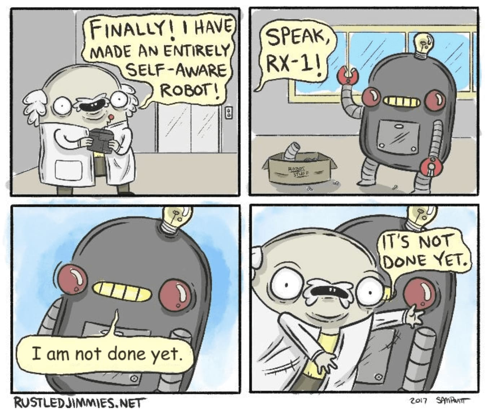

What's next ?
Cet article s'intéresse aux perspectives des réseaux antagonistes génératifs et de l'intelligence artificielle
“It’s not artificial intelligence I’m worried about, it’s human stupidity.”
Neil Jacobstein


Au vu du progrès technologique, que prévoir pour le futur ? L’avènement des gan ? Le transhumanisme ou pire notre remplacement par des robots ? Nous sommes encore très loin de cette vision apocalyptique.

The Robot Uprising by Bryn G Jones
Nous sommes également très loin d’une intelligence artificielle générale mais cela n’empêche que d’importants progrès technologiques ont vu le jour. Ainsi, il s'avère important de développer une conscience numérique vis à vis de ces progrès, un esprit critique. Deux projets ont été développés en ce sens à l’Université de Washington.

Prise de conscience vis à vis de la facilité de tromper les gens à partir d'identités digitales Apprendre à démêler le vrai du faux. (exemple ici contour visage, oreilles, dents, background)

Cours donnée à l’Université de Washington. Donner aux étudiants les compétences nécessaires pour réfléchir de manière critique aux données présentées comme preuve dans les sciences sociales et naturelles. calling bullshit project A l’ECL public plus averti mais important que ça se démocratise!

Vers une IA éthique ? Une solution l'open data ? Mais les problèmes liées à la sécurité des applications à travers les adversarials examples notammment.